A design researcher who likes to
make_
Research-oriented UX designer with ~3 years across healthcare, education, and hospitality tech. I study how people adopt complex, multi-stakeholder, and AI-assisted experiences — then turn that into product decisions.
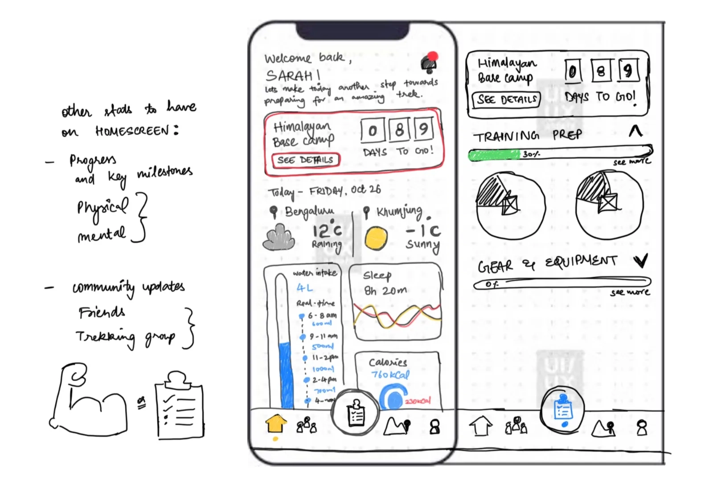
Helping first-time trekkers prepare with confidence.
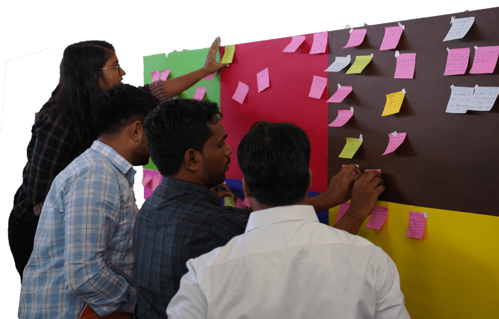
Cut report generation time by 70% for educators.
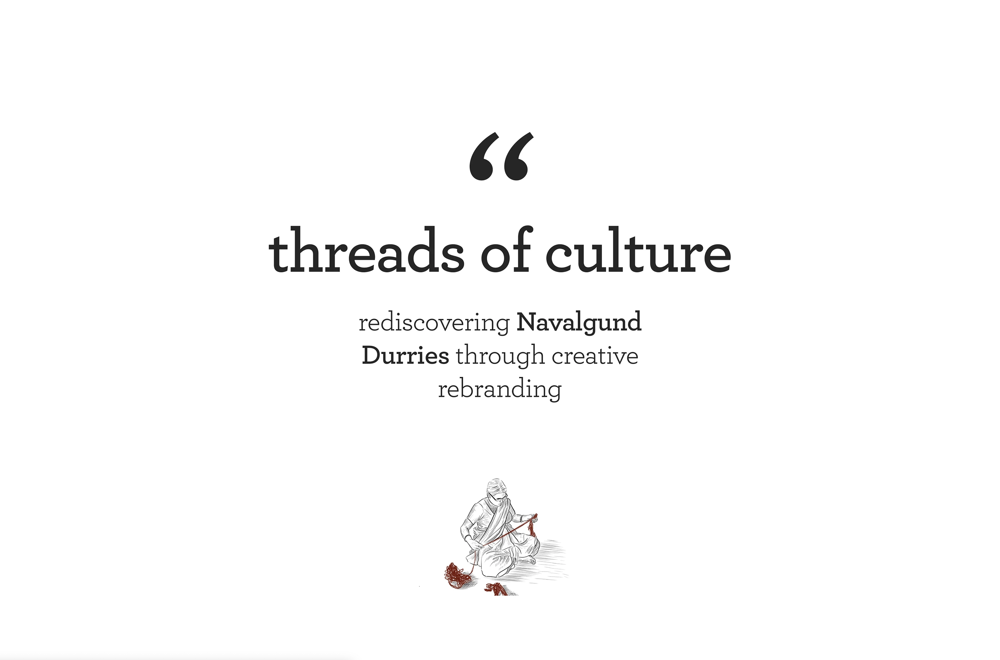
Reviving a traditional weaving cluster's identity.
from caricatures & charcoal → research & service design
Visual Communication at Shri Shankarlal Sundarbai Shasun Jain College, Chennai. My early years exploring different styles and media to tell stories.
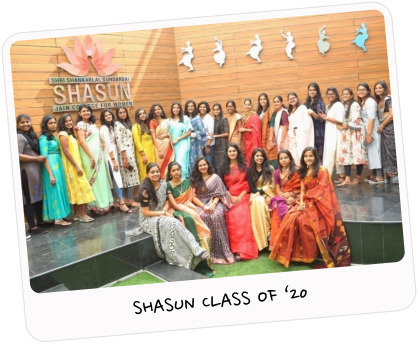
VR art, caricatures & charcoal → photography exhibitions → computer graphics & self-taught traditional animation. Made a showreel and a documentary.
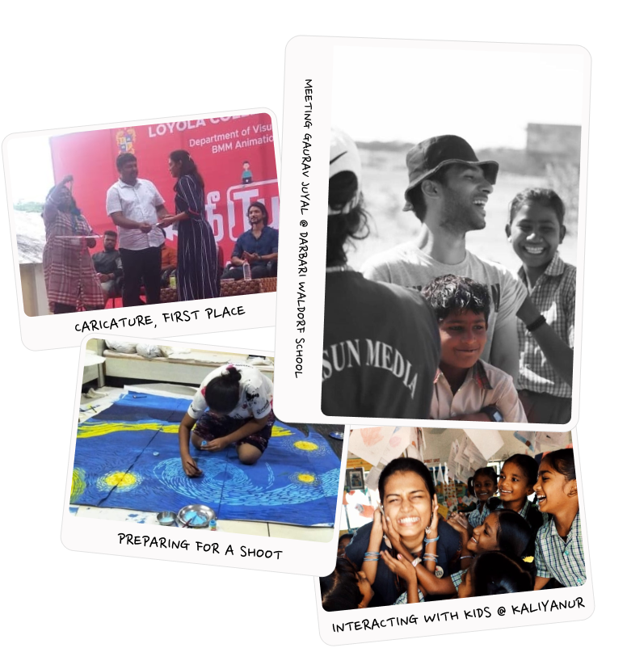
Alongside college, a diploma at Dreamzone School of Creative Studies — design, illustration & garment construction, culminating in a graduation runway show.
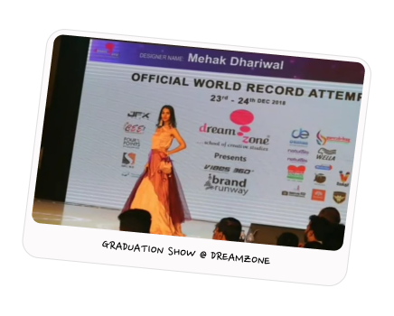
Kept creating from home — running photoshoots over G-Meet, shooting self-portraits in the living room, filling sketchbooks, and taking on whacky illustration prompts from the internet.
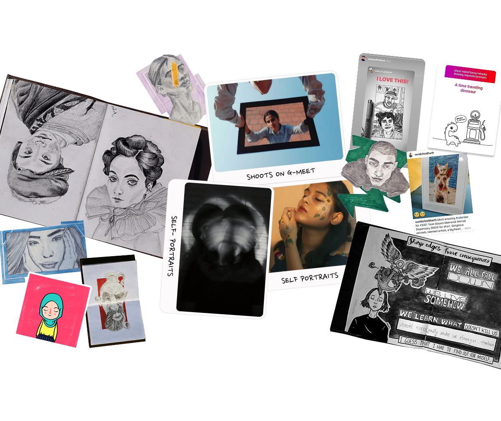
Reignited my love for working with kids and education — teaching, mentoring, and coaching fundraising drives over video calls and in classrooms.
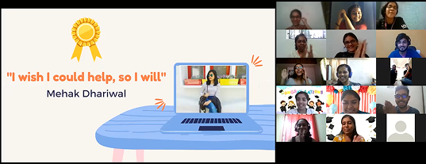
Art Director, then Associate Designer at a kids' slow-fashion label. Built a consistent style guide, ran studio & on-location shoots, and researched sustainable seasonal designs.
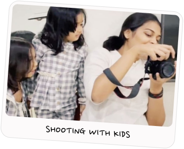
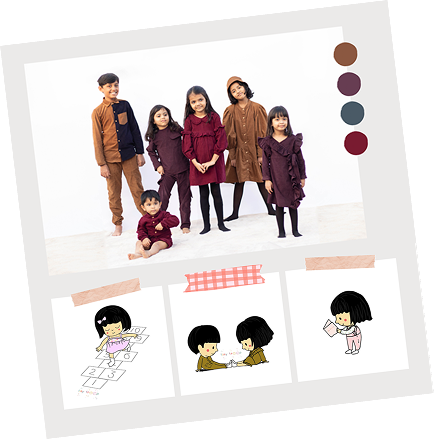
Masters in Design specializing in Experience Design — systems thinking, sustainability, design innovation & research methods. Deepened UX/UI while still chasing branding, animation & trends.
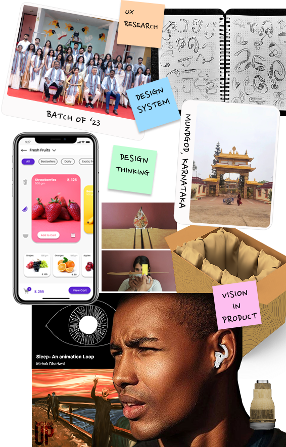
Worked on the UI of an ed-tech product and a genealogy product. Shadowed research and client meetings, and was part of tech hand-offs.
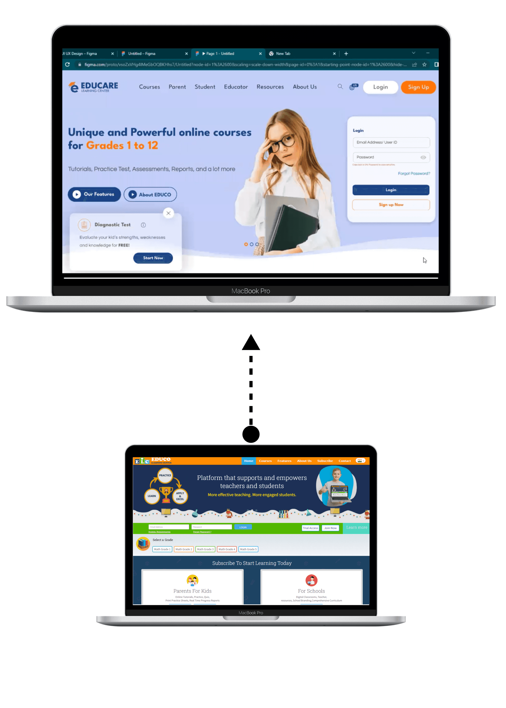
Mostly research — dashboards plus an integrating platform across all of Bosch's clinical-testing AI devices.
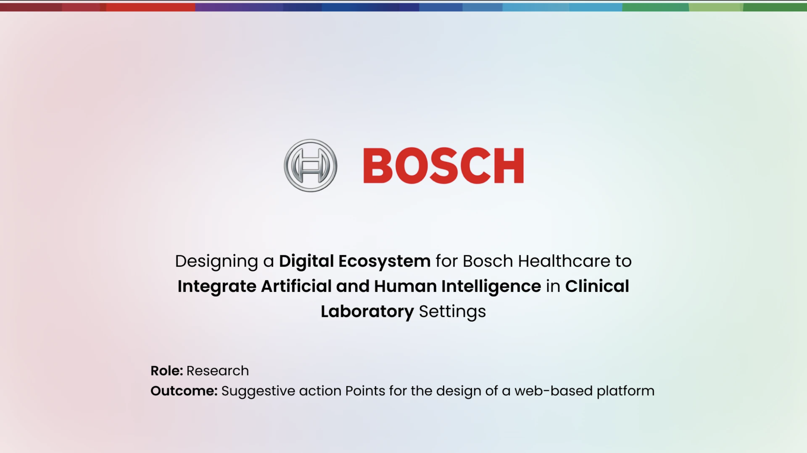
Led research in urban & rural India, ran design-thinking workshops for 50+, redesigned a student-impact dashboard (−70% report time), and shipped innovation modules to 300+ schools & ITIs with Shikshalokam & Tekdi.
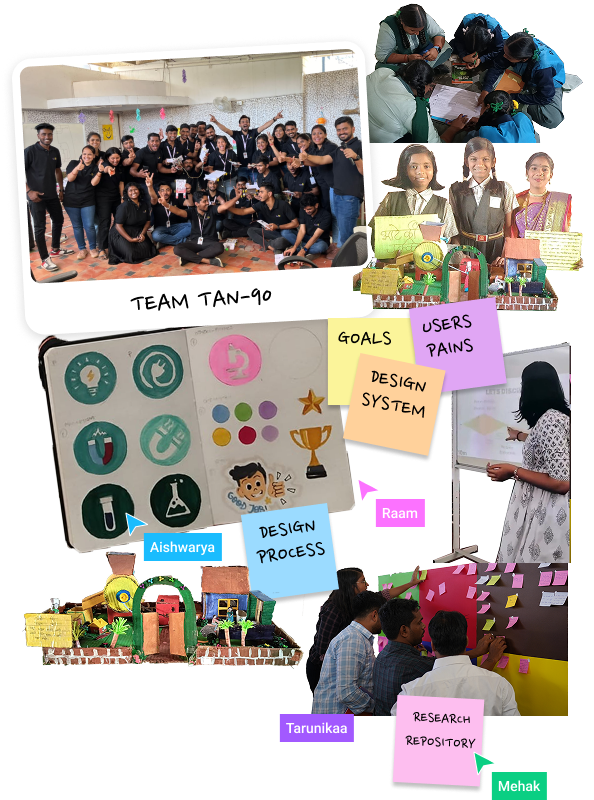
Designing Just a Bowl from scratch — mechanics, systems & play-testing — the seed of Straight Outta Dream, a tabletop studio it might grow into. Research and prototyping, but make it play.
Into the game →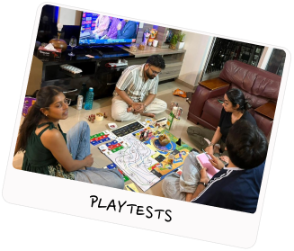
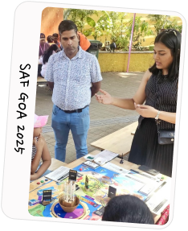
Researching B2B hospitality workflows and shaping MVP decisions across business, ops & engineering — recognised as Best Rookie. Still freelancing on the side.
See what I'm building →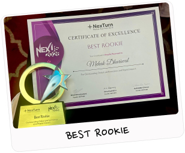
Mehak brings a research-driven and innovative mindset to UX, consistently exploring multiple ideas before converging on the best solution. Her commitment is not just to deliver, but to excel — ensuring quality and user clarity at every stage. She took on some of the most complex challenges at ApartWorld, laying the foundational design and research for the Booking journey. She kept discovery and delivery aligned by capturing and closing grooming decisions, and led customer conversations, translating insights into actionable outcomes. Optimistic, engaging, easy to work with — and an impressive designer.
I've worked with Mehak for over a year, and in one sentence: she's someone very easy to work with. She's a UX professional who's a step ahead in understanding and designing for better interaction — great articulation, a strong grasp of the functional side, and quick with solutions. I clearly remember the lengths she went to building stories for features that needed real research to define the user journeys around property search & booking. As a solution consultant & product enthusiast, she's a real asset a team can rely on.
Mehak has been an excellent contributor to the project over the last year. She consistently demonstrated strong research skills, professionalism, and integrity, delivering quality work and contributing positively to the team.
Mehak manages multiple projects simultaneously without compromising quality. With a strong understanding of product thinking, she asks insightful questions and consistently brings innovative ideas — a passionate, driven professional.
An outstanding design lead. She demonstrates exceptional clarity in navigating complex situations and finds innovative solutions in ambiguous circumstances. Her collaborative approach elevates projects and fosters a positive team dynamic.
Mehak very quickly became an exceptional part of My Tiny Troop. She showed a strong passion for fashion & photography and took on tasks with enthusiasm and professionalism. She contributed valuable ideas, worked well under pressure, and was a true asset to our team. I highly recommend her for any opportunities in the fashion industry and beyond!